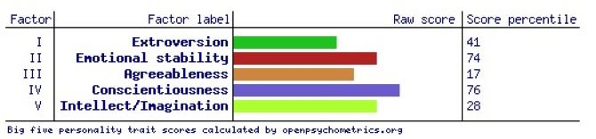
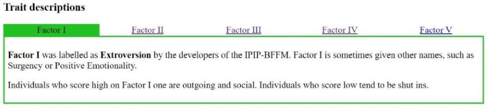
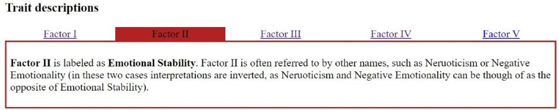
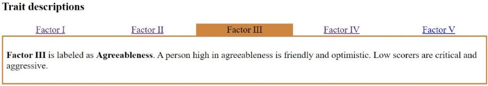
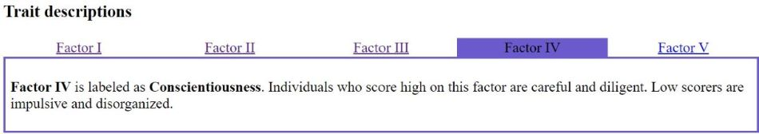
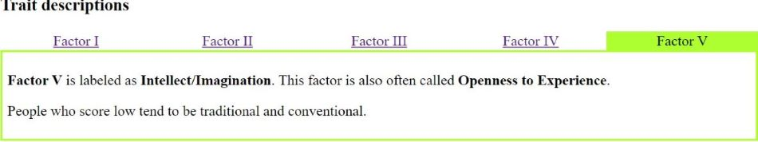

The position of Cyber Security Analyst at Australian Unity involves supporting the development and operations of cyber security by protecting information assets,
disruptions and any unauthorised access to Australian Unity technology systems.
This position is appealing to me because I feel cyber security has become a significant issue in society today.
I wish to gain employment in this area because I feel cyber security issues have become a significant issue with big business and corporations to help keep data safe from intrusions.
My Skills, qualifications & experience:
Currently I do not have many skills, qualifications or experience in this field.
However, I do have the basic knowledge of computer operations and have worked with some different computer systems over the years.
I do work in a team environment where communication skills are required.
My Plan:
My plan to obtain the required skills is to complete the required IT courses starting from the beginning, with the Introduction to IT.
The next step would be learning software development in depth to gain the skills to identify the commands, learn the language and different program frameworks.
Then to apply for an IT job to gain and further my IT experience. Being in the IT industry will help me gain the appropriate experience around IT and learn more and gain different skills.
Once I have 2 years of working experience, I would like to study cyber security.
Pragmatists need to be able to see how to put the learning into practice in the real world.
Abstract concepts and games are of limited use unless they can see a way to put the ideas into action.
Pragmatists are likely to be experimenters, trying out new ideas, theories and techniques to see if they work.
They may act quickly and confidently on ideas, getting straight to the point, and may lose patience with lengthy discussions.
Activists like to immerse themselves fully in new experiences.
They enjoy the ‘here and now’, and tend to be open minded, enthusiastic and flexible.
They have a tendency to act first and consider the consequences later,
and they often seek to centre activities around themselves.
Theorists like to think through problems in a logical manner.
They value rationality and objectivity, and like to assimilate disparate facts into coherent theories.
They are disciplined, aiming to fit things into a rational order.
They are often keen on basic assumptions, principles, theories, models and systems thinking.
Reflectors prefer to stand back and observe. They tend to be cautious, preferring to take a back seat.
They like to collect and analyse information to help them reach their conclusions,
which they may take considerable time and effort to develop.
Reflectors see the big picture by using information gathered from previous experience as well as the here and now.
Big Five Personality Test Results (openpsychometrics.org)






What do the results of these tests mean for me?
After completing the following tests I’ve found majority of the answers are spot on.
example, I’m a person who likes to be shown how to do things before attempting,
I like to get straight to the point otherwise I will lose interest as well.
Challenges I like to do for some new experience which allows me to test myself and push myself to see how far I can go before I fall back into my comfort zone.
How do you think these results may influence your behaviour in a team?
I see myself as an open-minded person.
I would like to sit back and gather as much information from my team members and observe their ideas first,
then see if I can come up with any suggestions. I’m a friendly person, approachable and flexible.
How should you take this into account when forming a team?
I’m happy to work with all sorts of different people and personalities.
I am approachable and flexible when it comes to team work.
I have great communication skills therefore this allows me to work with variety of people.
Project: Fire Ready.
Overview:
Project Fire Ready will be an app for smartphones which could be downloaded for free in their app store. I am aiming to bring this app alive which would allow users the tools in their hands to be Fire Ready for the season. Not only it will give you information about how to prepare your property but much more information on total fire bands to household compliances e.g., Gas heaters, smoke alarms etc. I see this app would help a lot of households all over the state and the country to give them support when it’s required. All the relevant information will be a click away to be more Fire Ready.
Motivation:
There is a lot of campaigning regarding “Be Fire Ready” all over the TV. But I don’t see a specific app that’s dedicated with stored information at the palm of your hand how to “Be Fire Ready”.
I believe it will be useful for likes of the CFA and FRV to get the messengers across easer then relying on advertisements. Users will have a risk management tool to guide them through total fire ban.
People sometimes forget to check their gas heaters which it had shown it can be very deadly due to gas leakage and not knowing. The app will give them reminders when to get it serviced and when its due. Forgetting to change your batteries in your smoke alarms will be put in the past by giving you notifications on when to change them or set yourself a reminder too.
Description:
Project Fire Ready will be a service provided via smartphone app. The project will be broken up into 3 main sections; Fire Plan Resource, Home Appliances and Contacts.
Fire Plan Resource:
This section will provide the link direct to the CFA website regarding information on a “Bushfire Plan”. This will help people to find the required information to pre-pair their property and themselves in case the imaginable happens. The link will also show community fire ratings for areas.
This section will have a PDF file attached inside which will be a copy of the Bushfire Survival Plan which can be download and printed every season. Having it in the app would be desirable so time wasting searching the web for is no longer.
In my app I would like to app a feature called “Register your leave”. This data base would be monitored by emergency workers only. EG Police and CFA.
The idea for this is to help show people have register they have left the area of concern when a bushfire is close by. If the imageable had happen such as the bushfire goes through homes, The Register would show the owners have left the area.
Home Appliances:
The section will have 2 menus, Smoke Alarm and Heater Inspections.
Smoke Alarm:
Have you ever forgotten the time when you the last time you changed your smoke alarm batteries? The Smoke Alarm section is designed to help you set reminders the last time you change them. It’s said once a year to change them, However, it is disable to at less change them twice a year. The reminder will be set in your calendar. You can also track the last time you replaced them.
Heater Inspections:
Family home gas heaters can be deadly if unchecked and serviced. They can admit Carbon Monoxide without any one known and cause a fatality. Every year these heaters should be checked and serviced. Just like the Smoke Alarm section, you would be able to set reminders and have access to your phones calendar.
Contacts:
Contacts will provide all the necessary phone numbers for the CFA.
This will help people to find the right contact required for the right situation.
The following numbers that will be provided:
- Emergency
- Vic Emergency
- Burn Off Register
- CFA Headquarters.
Tools and Technologies:
The tool I have chosen to develop my idea would be SWIFT. Swift is a new programming language of the iOS apps. It works on Apples Cocoa and Cocoa Touch frameworks which is safe and effective.
Swift adds modern features to make the programming more flexible and more comfortable and adopts a safe programming pattern. Being new at this, I feel that Swift would be an easy one to learn and enjoyable to create apps. Also, I’m a big iOS user.
Linking the CFA sites on my app would also need to be added. They are a big reference for the issues I am covering in my app. Without these the app would mean nothing.
site ref:
Top 7 Technologies Used For Creating Robust Mobile Apps in 2020 (yourstory.com)
Skills Required:
Skills I would require to help me make this app successful for myself to get familiar with different development platforms and frameworks, and start to get some knowledge of the programming languages.
Learning to store data and update coding in the future would allow me to update information to be transferred to the app. Taking the correct studies to learn the basics of coding would be a start. This will help me understand phrases and the language to put it together.
Attention to detail and creativity to make the app appealing to users is a must.
The app needs to be easy to navigate and access with no problem.
Outcome:
The aim of this app is to help people keep up to date with current changes and most of all, to save lives. If it was to become a successful app, I believe it would make a bit of a difference in being ready for an unfortunate event that could potentially happen. Too many lives have been lost in bush fires. I would hope this app helps more people to prepare and be ready.
We lose track of time in our busy lives and forgetting to change batteries in the smoke alarm can be dangerous, and forgetting to get your gas heater inspected regularly could be fatal. The app can solve this problem by giving you the reminder that you need.